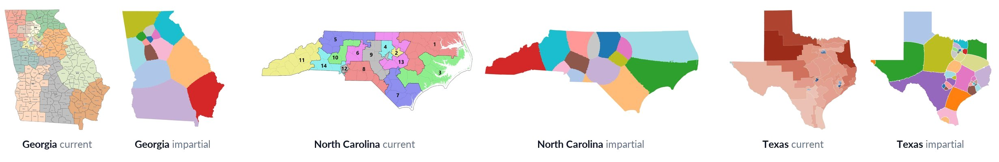

Jonathan Bodea
Hi! I'm Jonathan, a high school student. Most of my work has been on AI safety and reliability, with collaborators at  Georgia Tech's Polo Club,
Georgia Tech's Polo Club,  UC Berkeley,
UC Berkeley,  Stanford University, and the
Stanford University, and the  UK AI Security Institute.
UK AI Security Institute.

Publications

Reinforcement learning has emerged as a dominant technique for fine-tuning the behavior of large language models, with policy optimization (PO) algorithms such as GRPO, DAPO, and Dr. GRPO emerging in rapid succession to advance state-of-the-art reasoning and alignment performance. However, the modular differences between these algorithms, including targeted improvements to clipping, advantage estimation, and reward aggregation, are introduced across separate papers with inconsistent notation, making them difficult to compare and intimidating to the non-expert community. We present UNIPO, the first interactive visualization tool that exposes the token-level training dynamics of RL fine-tuning algorithms through a unified design. UNIPO connects three complementary views — a high-level training overview, a step-level prompt and response inspector, and a side-by-side algorithm comparison — allowing learners to observe how individual design decisions propagate through training. Through two usage scenarios, we demonstrate how UNIPO supports both classroom instruction for non-experts and algorithm selection for AI practitioners.

We study how LLM agents can detect and defend against deceptive counterparts in strategic dialogue, developing methods that equip models to recognize manipulation and respond robustly when interacting with adversarial opponents.
*Contributed equally
Projects

A nonpartisan project that draws congressional maps for any state using only census data, offering a less biased alternative to the current maps and showing how gerrymandering can decide elections before a single vote is cast.